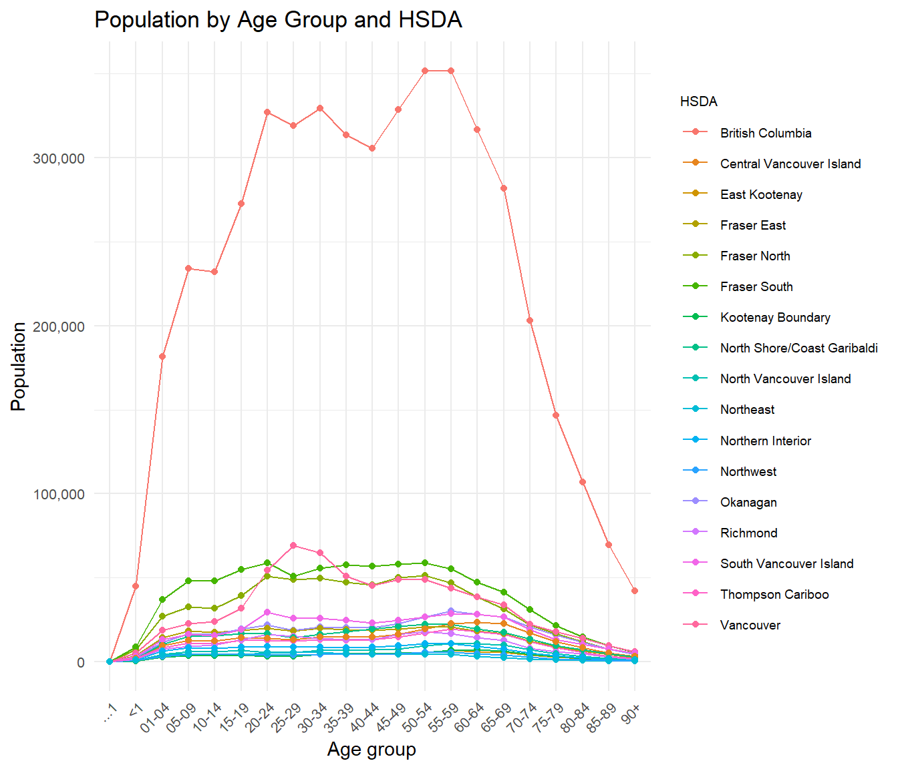
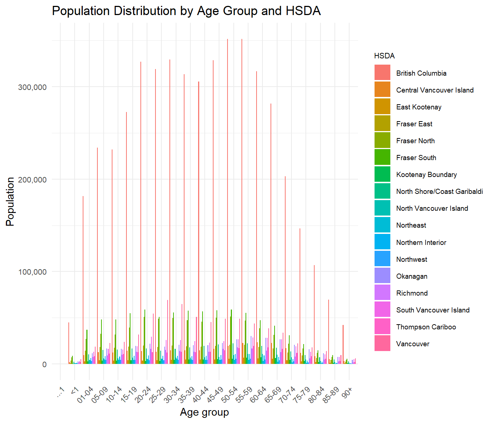
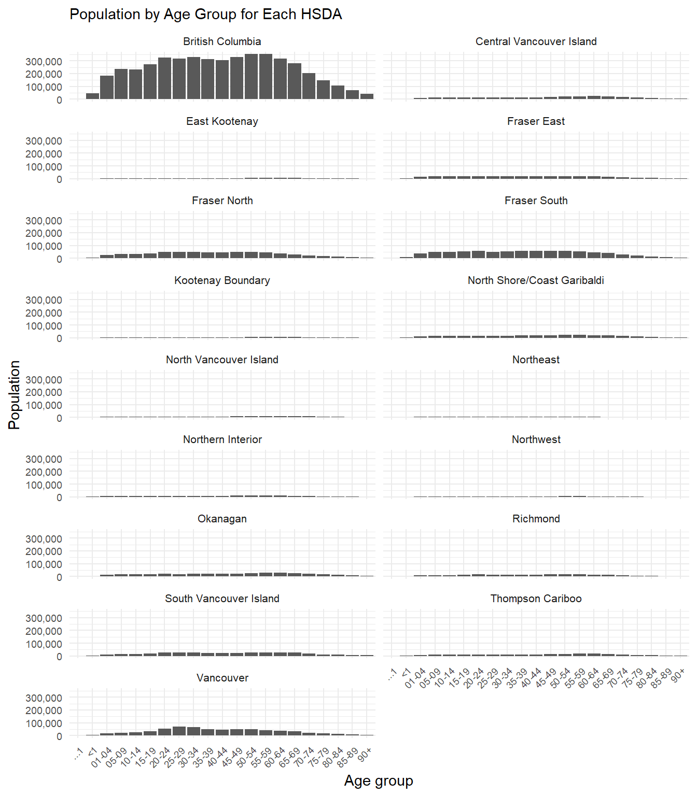
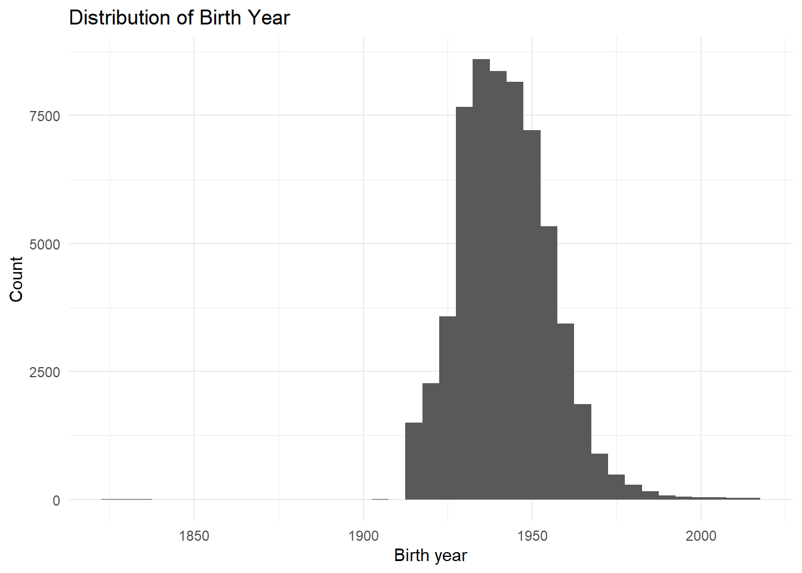
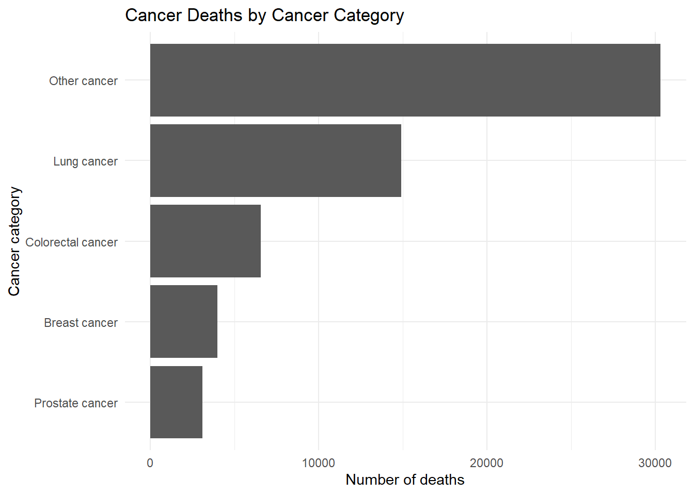
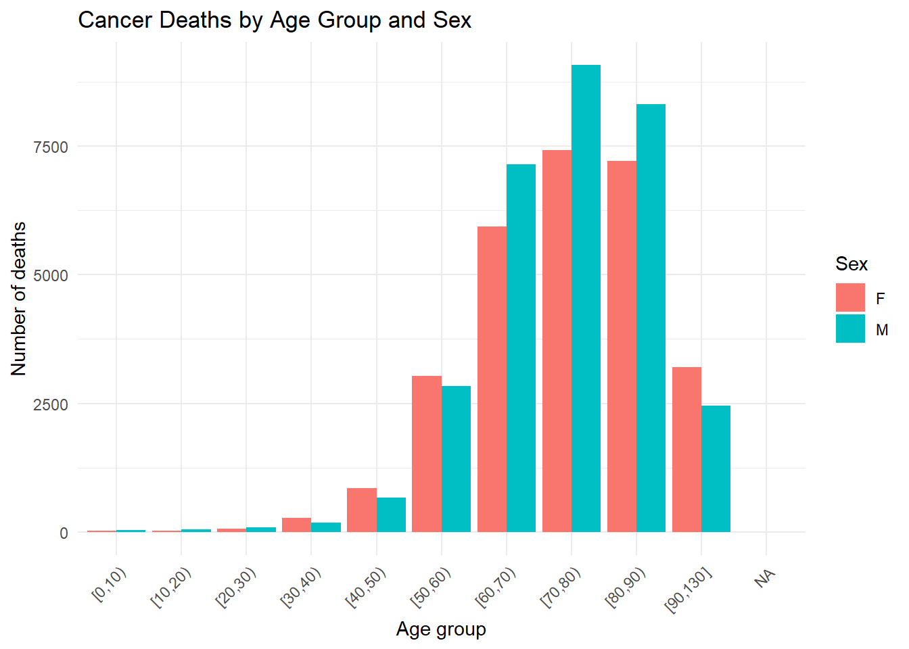

Chapter 6 Visualization and Advanced Data Cleaning
In previous chapters, we focused on importing, cleaning, reshaping, and joining datasets using the tidyverse. In this chapter, we extend those workflows by introducing exploratory visualization and more advanced data-cleaning techniques commonly used in population health and environmental data analysis.
The overall objective is to prepare several datasets for later analytical work involving cancer mortality, population estimates, geographic correspondence files, and environmental exposure data. Along the way, we will review common challenges such as missing values, inconsistent variable names, duplicate records, invalid dates, and poorly formatted identifiers.
Although the datasets used in this course are simplified for teaching purposes, the workflow closely reflects the types of cleaning and preparation steps encountered in real-world epidemiological and environmental health projects.
The chapter also introduces several important visualization techniques using ggplot2, which will help you explore and validate your cleaned datasets. The ggplot2 package is based on the Grammar of Graphics framework Wickham (2017). Data visualization in this book is primarily based on the ggplot2 package Wickham (2026a).
6.1 Research context and datasets
The exercises in this chapter are motivated by two simplified research questions.
The first analysis investigates age- and sex-specific cancer mortality rates by health region in British Columbia. The second analysis explores whether environmental exposure variables can be linked to mortality data in order to perform a simplified odds-ratio analysis.
In practice, incidence or cancer case data would generally be preferable to mortality data for exposure studies. However, the emphasis of this course is on data cleaning and management rather than formal epidemiological interpretation.
Four datasets will be used throughout the chapter:
- a mortality dataset containing fictitious death records;
- a population dataset containing age- and sex-specific population estimates;
- a geographic correspondence file linking dissemination blocks to health regions; and
- an environmental dataset containing weather variables by postal code.
We begin by loading the required libraries.
Next, we import the datasets into R.
6.2 Reviewing datasets before cleaning
Before modifying any dataset, it is important to understand its overall structure. Initial exploratory review often helps identify unexpected variable names, missing values, duplicate records, or formatting inconsistencies.
We first create a list containing all datasets.
We can then quickly review dataset dimensions.
## # A tibble: 4 × 3
## dataset rows columns
## <chr> <int> <int>
## 1 mort 60143 13
## 2 pop 51 25
## 3 corr 420963 6
## 4 env 116011 8Column names can also be inspected.
## $mort
## [1] "ID" "Sex"
## [3] "Cause_of_death" "dbuid2016"
## [5] "Location_of_death" "Marital_status"
## [7] "Postalcode" "B_year"
## [9] "B_month" "B_day"
## [11] "D_year" "D_month"
## [13] "D_day"
##
## $pop
## [1] "...1"
## [2] "Health Service Delivery Area"
## [3] "Year"
## [4] "Gender"
## [5] "<1"
## [6] "04-Jan"
## [7] "09-May"
## [8] "14-Oct"
## [9] "15-19"
## [10] "20-24"
## [11] "25-29"
## [12] "30-34"
## [13] "35-39"
## [14] "40-44"
## [15] "45-49"
## [16] "50-54"
## [17] "55-59"
## [18] "60-64"
## [19] "65-69"
## [20] "70-74"
## [21] "75-79"
## [22] "80-84"
## [23] "85-89"
## [24] "90+"
## [25] "Total"
##
## $corr
## [1] "dbuid2016" "csduid2016" "hruid2017"
## [4] "hrname_english" "hrname_french" "dbpop2016"
##
## $env
## [1] "POSTALCODE12" "WTHNRC12_01" "WTHNRC12_02"
## [4] "WTHNRC12_03" "WTHNRC12_04" "WTHNRC12_05"
## [7] "WTHNRC12_06" "WTHNRC12_07"Finally, we summarize missing values across datasets.
## $mort
## ID Sex Cause_of_death
## 0 13 0
## dbuid2016 Location_of_death Marital_status
## 4 0 0
## Postalcode B_year B_month
## 6 24 26
## B_day D_year D_month
## 26 0 0
## D_day
## 0
##
## $pop
## ...1 Health Service Delivery Area
## 0 0
## Year Gender
## 0 0
## <1 04-Jan
## 0 0
## 09-May 14-Oct
## 0 0
## 15-19 20-24
## 0 0
## 25-29 30-34
## 0 0
## 35-39 40-44
## 0 0
## 45-49 50-54
## 0 0
## 55-59 60-64
## 0 0
## 65-69 70-74
## 0 0
## 75-79 80-84
## 0 0
## 85-89 90+
## 0 0
## Total
## 0
##
## $corr
## dbuid2016 csduid2016 hruid2017 hrname_english
## 0 0 0 0
## hrname_french dbpop2016
## 0 35
##
## $env
## POSTALCODE12 WTHNRC12_01 WTHNRC12_02 WTHNRC12_03
## 0 0 0 0
## WTHNRC12_04 WTHNRC12_05 WTHNRC12_06 WTHNRC12_07
## 0 0 0 0Early exploratory review is one of the most important stages of data cleaning because it helps identify potential problems before they propagate through the analysis workflow.
Always inspect datasets immediately after import. Many analytical problems originate from unnoticed import issues, incorrect variable types, or unexpected missing values.
6.3 Cleaning and reshaping population data
The population dataset is currently stored in a wide format, where age groups appear as separate columns. Although this structure may be useful for spreadsheets, it is less convenient for visualization and analysis.
A tidy long-format structure is generally easier to work with in R.
We first reshape the dataset using pivot_longer().
pop_long <- pop %>%
select(
-any_of(c("X1", "Total"))
) %>%
pivot_longer(
cols = -any_of(
c(
"Year",
"Gender",
"Health Service Delivery Area"
)
),
names_to = "Age",
values_to = "Population"
) %>%
mutate(
Age = case_when(
Age == "04-Jan" ~ "01-04",
Age == "09-May" ~ "05-09",
Age == "14-Oct" ~ "10-14",
TRUE ~ Age
)
)
pop_long## # A tibble: 1,071 × 5
## Health Service Delivery A…¹ Year Gender Age Population
## <chr> <dbl> <chr> <chr> <dbl>
## 1 British Columbia 2016 M ...1 0
## 2 British Columbia 2016 M <1 22997
## 3 British Columbia 2016 M 01-04 93211
## 4 British Columbia 2016 M 05-09 121341
## 5 British Columbia 2016 M 10-14 119586
## 6 British Columbia 2016 M 15-19 140451
## 7 British Columbia 2016 M 20-24 170968
## 8 British Columbia 2016 M 25-29 159609
## 9 British Columbia 2016 M 30-34 162416
## 10 British Columbia 2016 M 35-39 155936
## # ℹ 1,061 more rows
## # ℹ abbreviated name: ¹`Health Service Delivery Area`Some variable names are unnecessarily long or contain spaces, so we simplify them.
## # A tibble: 1,071 × 4
## HSDA Gender Age Population
## <chr> <chr> <chr> <dbl>
## 1 British Columbia M ...1 0
## 2 British Columbia M <1 22997
## 3 British Columbia M 01-04 93211
## 4 British Columbia M 05-09 121341
## 5 British Columbia M 10-14 119586
## 6 British Columbia M 15-19 140451
## 7 British Columbia M 20-24 170968
## 8 British Columbia M 25-29 159609
## 9 British Columbia M 30-34 162416
## 10 British Columbia M 35-39 155936
## # ℹ 1,061 more rowsFor this example, we focus on total population counts only.
## # A tibble: 357 × 4
## HSDA Gender Age Population
## <chr> <chr> <chr> <dbl>
## 1 British Columbia T ...1 0
## 2 British Columbia T <1 44757
## 3 British Columbia T 01-04 181511
## 4 British Columbia T 05-09 234118
## 5 British Columbia T 10-14 232010
## 6 British Columbia T 15-19 272677
## 7 British Columbia T 20-24 327129
## 8 British Columbia T 25-29 318998
## 9 British Columbia T 30-34 329242
## 10 British Columbia T 35-39 313564
## # ℹ 347 more rows6.4 Visualizing population data
Visualization is an important part of exploratory analysis because it helps reveal trends, inconsistencies, and unusual values that may not be obvious in tables alone.
The following line plot displays population counts across age groups by HSDA.
pop_total %>%
ggplot(
aes(
x = Age,
y = Population,
group = HSDA,
colour = HSDA
)
) +
geom_line() +
geom_point(size = 1.5) +
scale_y_continuous(
breaks = scales::breaks_pretty(n = 5),
labels = scales::label_comma()
) +
labs(
title = "Population by Age Group and HSDA",
x = "Age group",
y = "Population",
colour = "HSDA"
) +
theme_minimal() +
theme(
axis.text.x = element_text(
angle = 45,
hjust = 1,
size = 8
),
axis.text.y = element_text(
size = 8
),
legend.text = element_text(
size = 7
),
legend.title = element_text(
size = 8
)
)
Because age groups are categorical rather than continuous, a bar plot may sometimes be easier to interpret.
pop_total %>%
ggplot(
aes(
x = Age,
y = Population,
fill = HSDA
)
) +
geom_col(
position = "dodge"
) +
scale_y_continuous(
breaks = scales::breaks_pretty(n = 5),
labels = scales::label_comma()
) +
labs(
title = "Population Distribution by Age Group and HSDA",
x = "Age group",
y = "Population",
fill = "HSDA"
) +
theme_minimal() +
theme(
axis.text.x = element_text(
angle = 45,
hjust = 1,
size = 8
),
axis.text.y = element_text(
size = 8
),
legend.text = element_text(
size = 7
),
legend.title = element_text(
size = 8
)
)
When plots become crowded, faceting can improve readability.
pop_total %>%
ggplot(
aes(
x = Age,
y = Population
)
) +
geom_col() +
facet_wrap(
~ HSDA,
ncol = 2
) +
scale_y_continuous(
breaks = scales::breaks_pretty(n = 4),
labels = scales::label_comma()
) +
labs(
title = "Population by Age Group for Each HSDA",
x = "Age group",
y = "Population"
) +
theme_minimal() +
theme(
axis.text.x = element_text(
angle = 45,
hjust = 1,
size = 7
),
axis.text.y = element_text(
size = 7
),
strip.text = element_text(
size = 8
),
plot.title = element_text(
size = 11
)
)
## Identifying join keysBefore combining datasets, it is important to identify variables that can serve as join keys.
## $mort
## [1] "ID" "Sex"
## [3] "Cause_of_death" "dbuid2016"
## [5] "Location_of_death" "Marital_status"
## [7] "Postalcode" "B_year"
## [9] "B_month" "B_day"
## [11] "D_year" "D_month"
## [13] "D_day"
##
## $pop
## [1] "...1"
## [2] "Health Service Delivery Area"
## [3] "Year"
## [4] "Gender"
## [5] "<1"
## [6] "04-Jan"
## [7] "09-May"
## [8] "14-Oct"
## [9] "15-19"
## [10] "20-24"
## [11] "25-29"
## [12] "30-34"
## [13] "35-39"
## [14] "40-44"
## [15] "45-49"
## [16] "50-54"
## [17] "55-59"
## [18] "60-64"
## [19] "65-69"
## [20] "70-74"
## [21] "75-79"
## [22] "80-84"
## [23] "85-89"
## [24] "90+"
## [25] "Total"
##
## $corr
## [1] "dbuid2016" "csduid2016" "hruid2017"
## [4] "hrname_english" "hrname_french" "dbpop2016"
##
## $env
## [1] "POSTALCODE12" "WTHNRC12_01" "WTHNRC12_02"
## [4] "WTHNRC12_03" "WTHNRC12_04" "WTHNRC12_05"
## [7] "WTHNRC12_06" "WTHNRC12_07"Possible join paths include:
- joining mortality data to the correspondence file using
dbuid2016; - joining population data to geographic information using HSDA-related variables; and
- linking environmental data to mortality records using postal codes.
Before performing joins, always inspect whether the key variables are unique and consistently formatted.
Incorrect joins are one of the most common causes of duplicate records and analytical errors in real-world projects.
6.5 Cleaning mortality data
We now begin cleaning the mortality dataset.
Variables not required for the current analysis are removed.
## # A tibble: 60,143 × 11
## ID Sex Cause_of_death dbuid2016 Postalcode B_year
## <dbl> <chr> <chr> <dbl> <chr> <dbl>
## 1 1000001 M D47 1.31e10 E1A1E9 1943
## 2 1000002 F C34 4.81e10 T2E0T2 1943
## 3 1000003 M C26 3.52e10 M4J1L1 1953
## 4 1000004 M C16 2.47e10 H9H1B4 1923
## 5 1000005 M C22 2.46e10 J2W2B6 1931
## 6 1000006 F C50 3.53e10 L8H2K1 1933
## 7 1000007 F C85 3.54e10 N9Y3X5 1918
## 8 1000008 F C56 3.53e10 L8H7G2 1972
## 9 1000009 F C64 2.47e10 H9P2B3 1922
## 10 1000010 M C22 4.81e10 T5M1G2 1953
## # ℹ 60,133 more rows
## # ℹ 5 more variables: B_month <dbl>, B_day <dbl>,
## # D_year <dbl>, D_month <dbl>, D_day <dbl>Duplicate records should also be identified and reviewed.
## # A tibble: 23 × 2
## ID n
## <dbl> <int>
## 1 1000170 2
## 2 1000662 2
## 3 1001349 2
## 4 1001352 2
## 5 1004287 2
## 6 1004618 2
## 7 1004869 2
## 8 1005245 2
## 9 1008199 2
## 10 1012433 2
## # ℹ 13 more rows## # A tibble: 47 × 11
## ID Sex Cause_of_death dbuid2016 Postalcode B_year
## <dbl> <chr> <chr> <dbl> <chr> <dbl>
## 1 1000170 F C91 1.21e10 B4V1T1 1922
## 2 1000170 F C91 1.21e10 B4V1T1 1922
## 3 1000662 M C34 2.47e10 J7P4H7 1965
## 4 1000662 M C34 2.47e10 J7P4H7 1965
## 5 1001349 M C16 2.44e10 G9A5H9 1961
## 6 1001349 M C16 2.44e10 G9A5H9 1961
## 7 1001352 M C24 4.80e10 T1B3E3 1956
## 8 1001352 M C24 4.80e10 T1B3E3 1956
## 9 1004287 M C34 3.53e10 N4S2E1 1949
## 10 1004287 M C34 3.53e10 N4S2E1 1949
## # ℹ 37 more rows
## # ℹ 5 more variables: B_month <dbl>, B_day <dbl>,
## # D_year <dbl>, D_month <dbl>, D_day <dbl>After inspection, duplicates can be removed.
6.6 Handling missing and inconsistent values
Missing values and data-entry problems are common in administrative datasets.
We begin by examining birth year distributions.
rates %>%
ggplot(
aes(x = B_year)
) +
geom_histogram(binwidth = 5) +
labs(
title = "Distribution of Birth Year",
x = "Birth year",
y = "Count"
) +
theme_minimal()
Some birth years before 1905 are likely data-entry errors. For this exercise, we assume these values should belong to the twentieth century.
rates <- rates %>%
mutate(
B_year = if_else(
B_year < 1905,
B_year + 100,
B_year
),
B_month = if_else(
is.na(B_month),
6,
B_month
),
B_day = if_else(
is.na(B_day),
15,
B_day
)
)We also inspect death months and days.
## # A tibble: 17 × 2
## D_month n
## <dbl> <int>
## 1 1 5088
## 2 2 4677
## 3 3 5056
## 4 4 4880
## 5 5 5108
## 6 6 5015
## 7 7 5147
## 8 8 5195
## 9 9 4927
## 10 10 5038
## 11 11 4913
## 12 12 5070
## 13 16 1
## 14 17 1
## 15 18 2
## 16 19 1
## 17 21 1## # A tibble: 12 × 2
## D_month n
## <dbl> <int>
## 1 1 5088
## 2 2 4677
## 3 3 5056
## 4 4 4880
## 5 5 5108
## 6 6 5021
## 7 7 5147
## 8 8 5195
## 9 9 4927
## 10 10 5038
## 11 11 4913
## 12 12 5070## # A tibble: 31 × 2
## D_day n
## <dbl> <int>
## 1 1 1954
## 2 2 1996
## 3 3 1972
## 4 4 2022
## 5 5 1929
## 6 6 1960
## 7 7 1986
## 8 8 1966
## 9 9 1956
## 10 10 1903
## # ℹ 21 more rows## # A tibble: 31 × 2
## B_day n
## <dbl> <int>
## 1 1 1979
## 2 2 2029
## 3 3 1949
## 4 4 1937
## 5 5 1916
## 6 6 1877
## 7 7 2001
## 8 8 1960
## 9 9 1942
## 10 10 1995
## # ℹ 21 more rows6.7 Creating dates and calculating age
The lubridate package simplifies date handling in R.
We create dates of birth and death and then calculate age.
rates <- rates %>%
mutate(
DOB = as_date(
str_c(
B_year,
B_month,
B_day,
sep = "-"
)
),
DOD = as_date(
str_c(
D_year,
D_month,
D_day,
sep = "-"
)
),
Age = year(DOD) - year(DOB),
Age = if_else(
Age < 0,
0.5,
as.numeric(Age)
)
)
range(rates$Age, na.rm = TRUE)## [1] 0 111Remaining missing values can then be inspected.
## ID Sex Cause_of_death dbuid2016
## 0 13 0 4
## Postalcode B_year B_month B_day
## 6 24 0 0
## D_year D_month D_day DOB
## 0 0 0 30
## DOD Age
## 0 30## # A tibble: 53 × 14
## ID Sex Cause_of_death dbuid2016 Postalcode B_year
## <dbl> <chr> <chr> <dbl> <chr> <dbl>
## 1 1000185 F C85 5.94e10 V4V2G1 NA
## 2 1000345 <NA> C19 5.92e10 V3W1S7 1964
## 3 1001139 F C50 5.95e10 V0J0B5 NA
## 4 1001262 M C25 5.92e10 <NA> 1952
## 5 1001402 F C34 5.94e10 V1E1V2 NA
## 6 1001696 <NA> C34 5.92e10 V8T4P6 1931
## 7 1001964 M C61 5.92e10 <NA> 1948
## 8 1002150 M C26 5.91e10 V2P6S3 NA
## 9 1003446 F C34 5.92e10 V8T4E5 NA
## 10 1004221 M C34 5.92e10 V8V4V6 NA
## # ℹ 43 more rows
## # ℹ 8 more variables: B_month <dbl>, B_day <dbl>,
## # D_year <dbl>, D_month <dbl>, D_day <dbl>, DOB <date>,
## # DOD <date>, Age <dbl>Records missing essential identifiers are removed.
6.8 Imputing missing values
For demonstration purposes, missing sex values are randomly imputed.
set.seed(123)
missing_sex_index <- is.na(rates$Sex)
missing_sex_count <- sum(missing_sex_index)
rates$Sex <- as.character(rates$Sex)
rates$Sex[missing_sex_index] <- sample(
c("M", "F"),
size = missing_sex_count,
replace = TRUE
)
rates$Sex <- as.factor(rates$Sex)
rates %>%
count(Sex)## # A tibble: 2 × 2
## Sex n
## <fct> <int>
## 1 F 28617
## 2 M 31475Although this approach is useful for teaching purposes, real-world imputation should be performed much more carefully.
Random imputation can introduce bias into analyses. Always document assumptions and cleaning decisions clearly.
6.9 Working with ICD-10 codes
Cause-of-death variables often contain coded medical classifications.
We separate ICD-10 codes into letter and numeric components.
rates <- rates %>%
extract(
Cause_of_death,
into = c("letter", "number"),
regex = "([A-Z]+)([0-9]+)",
remove = FALSE
) %>%
mutate(
number = as.numeric(number)
)
rates %>%
count(letter)## # A tibble: 2 × 2
## letter n
## <chr> <int>
## 1 C 58916
## 2 D 1176Cancer-related mortality records are identified using ICD-10 codes beginning with "C".
We then classify cancer categories and age groups.
rates <- rates %>%
mutate(
CauseCat = case_when(
number == 50 ~ 1,
number == 61 ~ 2,
number %in% c(33, 34) ~ 3,
number %in% 18:21 ~ 4,
TRUE ~ 5
),
CauseCat_label = case_when(
CauseCat == 1 ~ "Breast cancer",
CauseCat == 2 ~ "Prostate cancer",
CauseCat == 3 ~ "Lung cancer",
CauseCat == 4 ~ "Colorectal cancer",
CauseCat == 5 ~ "Other cancer"
),
AgeCat = cut(
Age,
breaks = c(
0, 10, 20, 30, 40,
50, 60, 70, 80, 90, 130
),
include.lowest = TRUE,
right = FALSE
)
)
rates %>%
count(CauseCat_label)## # A tibble: 5 × 2
## CauseCat_label n
## <chr> <int>
## 1 Breast cancer 4003
## 2 Colorectal cancer 6564
## 3 Lung cancer 14914
## 4 Other cancer 30328
## 5 Prostate cancer 3107## # A tibble: 11 × 2
## AgeCat n
## <fct> <int>
## 1 [0,10) 66
## 2 [10,20) 81
## 3 [20,30) 148
## 4 [30,40) 459
## 5 [40,50) 1522
## 6 [50,60) 5866
## 7 [60,70) 13086
## 8 [70,80) 16495
## 9 [80,90) 15520
## 10 [90,130] 5667
## 11 <NA> 66.10 Visualizing cleaned mortality data
After cleaning the mortality data, we can explore the distributions visually.
rates %>%
count(CauseCat_label) %>%
ggplot(
aes(
x = reorder(CauseCat_label, n),
y = n
)
) +
geom_col() +
coord_flip() +
labs(
title = "Cancer Deaths by Cancer Category",
x = "Cancer category",
y = "Number of deaths"
) +
theme_minimal()
rates %>%
count(AgeCat, Sex) %>%
ggplot(
aes(
x = AgeCat,
y = n,
fill = Sex
)
) +
geom_col(position = "dodge") +
labs(
title = "Cancer Deaths by Age Group and Sex",
x = "Age group",
y = "Number of deaths",
fill = "Sex"
) +
theme_minimal() +
theme(
axis.text.x = element_text(
angle = 45,
hjust = 1
)
)
6.11 Saving cleaned datasets
Cleaned outputs should always be saved separately from raw data.
We first create an output folder if it does not already exist.
We then save the cleaned mortality data.
Environmental exposure data can also be cleaned and saved.
env_clean <- env %>%
select(
POSTALCODE12,
WTHNRC12_04,
WTHNRC12_05
) %>%
rename(
Postal_code = POSTALCODE12,
max_temp = WTHNRC12_04,
min_temp = WTHNRC12_05
) %>%
mutate(
exposure = if_else(
max_temp < 10 &
min_temp < -3,
1,
0
)
)
env_clean## # A tibble: 116,011 × 4
## Postal_code max_temp min_temp exposure
## <chr> <dbl> <dbl> <dbl>
## 1 V0C1E0 2.91 -8.12 1
## 2 V0C1W0 3.92 -7.65 1
## 3 V0C2X0 4.01 -7.93 1
## 4 V0C2Z0 4.32 -6.89 1
## 5 V0T1W0 4.33 -3.65 1
## 6 V0W1A0 4.51 -4.92 1
## 7 V0C1L0 4.58 -6.14 1
## 8 V0J1K0 4.71 -5.34 1
## 9 V0B1A1 4.91 -4.42 1
## 10 V0B1T6 4.91 -4.42 1
## # ℹ 116,001 more rows6.12 Joining datasets and validating postal codes
The mortality dataset can now be joined to the correspondence file.
## # A tibble: 48,682 × 24
## ID Sex Cause_of_death letter number dbuid2016
## <dbl> <fct> <chr> <chr> <dbl> <dbl>
## 1 1000002 F C34 C 34 48060924001
## 2 1000003 M C26 C 26 35204502002
## 3 1000004 M C16 C 16 24663048013
## 4 1000005 M C22 C 22 24560249013
## 5 1000006 F C50 C 50 35250845002
## 6 1000007 F C85 C 85 35370763005
## 7 1000008 F C56 C 56 35250788003
## 8 1000009 F C64 C 64 24662429005
## 9 1000010 M C22 C 22 48111094001
## 10 1000011 F C50 C 50 12090210002
## # ℹ 48,672 more rows
## # ℹ 18 more variables: Postalcode <chr>, B_year <dbl>,
## # B_month <dbl>, B_day <dbl>, D_year <dbl>,
## # D_month <dbl>, D_day <dbl>, DOB <date>, DOD <date>,
## # Age <dbl>, CauseCat <dbl>, CauseCat_label <chr>,
## # AgeCat <fct>, csduid2016 <dbl>, hruid2017 <dbl>,
## # hrname_english <chr>, hrname_french <chr>, …Postal codes should also be standardized before linkage.
rates <- rates %>%
mutate(
Postalcode_clean =
Postalcode %>%
str_to_upper() %>%
str_replace_all(
"\\s+",
""
)
)We can then identify postal codes that do not follow the expected Canadian format.
postal_pattern <-
"^(?!.*[DFIOQU])[A-VXY][0-9][A-Z][0-9][A-Z][0-9]$"
postal_issues <- rates %>%
filter(
is.na(
str_match(
Postalcode_clean,
postal_pattern
)
)
) %>%
select(
ID,
Postalcode,
Postalcode_clean
)
postal_issues## # A tibble: 38 × 3
## ID Postalcode Postalcode_clean
## <dbl> <chr> <chr>
## 1 1000103 V2A6X V2A6X
## 2 1000695 V5S2HY V5S2HY
## 3 1000760 V6Y1ML V6Y1ML
## 4 1000896 VOC1HO VOC1HO
## 5 1001210 V0ROB8 V0ROB8
## 6 1001262 <NA> <NA>
## 7 1001964 <NA> <NA>
## 8 1003432 V2SOA4 V2SOA4
## 9 1003907 VOB1HO VOB1HO
## 10 1004334 VOB1G8 VOB1G8
## # ℹ 28 more rowsRegular-expression validation is an extremely useful technique for detecting formatting problems in identifiers such as postal codes, phone numbers, or IDs.
6.13 Final assignment guidance
As you continue building analytical workflows, begin organizing your work into separate exploratory data analysis documents.
Each analysis file should clearly explain:
- the datasets being used;
- the cleaning and validation steps performed;
- assumptions made during cleaning;
- how missing values were handled; and
- how outputs were generated.
A well-documented workflow is just as important as the analysis itself.
6.14 Chapter summary
In this chapter, you expanded your data management workflow by combining advanced cleaning techniques with exploratory visualization. You reviewed datasets, reshaped population data, created visualizations, identified join keys, cleaned mortality and environmental datasets, handled missing values, validated identifiers, and created cleaned outputs for later analysis.
These workflows form the foundation of reproducible analytical projects and closely resemble the types of preparation steps required in real-world public health and environmental data analysis.